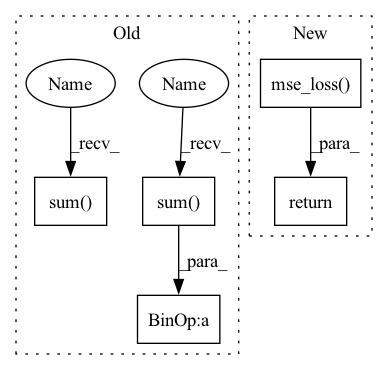

Pattern ID :2809

Before Change
logprobs = - torch.log(score_pred)
batch = traj_in.shape[0]
if reduction == "mean":
loss = torch.sum(torch.mul(logprobs, score_gt)) / batch
else:
loss = torch.sum(torch.mul(logprobs, score_gt))
// print("[TrajScoreSelection]: loss: {}".format(loss))
return loss
// return F.kl_div(score_pred, score_gt, reduction=reduction)
After Change
score_gt = F.softmax(-distance_metric(traj_in, traj_gt)/self.temper, dim=1)
score_pred = self.forward(feat_in, traj_in)
return F.mse_loss(score_pred, score_gt, reduction=reduction)
// logprobs = - torch.log(score_pred)
// batch = traj_in.shape[0]
// if reduction == "mean":
// loss = torch.sum(torch.mul(logprobs, score_gt)) / batch
In pattern: SUPERPATTERN
Frequency: 3
Non-data size: 5
Instances
Fragment ID: 11239066
Project Name: henry1iu/tnt-trajectory-predition
Commit Name: 2f3d77d2a8236e5c1e7c61f8e1a2235555f12e59
Time: 2021-08-22
Author: liu.jb.henry@gmail.com
File Name: core/model/layers/scoring_and_selection.py
M Class Name: TrajScoreSelection
N Class Name: TrajScoreSelection
M Method Name: loss(5)
N Method Name: loss(5)
M Parent Class: nn.Module
N Parent Class: nn.Module
M File Name: core/model/layers/scoring_and_selection.py
N File Name: core/model/layers/scoring_and_selection.py
M Start Line: 93
M End Line: 106
N Start Line: 93
N End Line: 96
'>
Before Change
logprobs = - torch.log(score_pred)
batch = traj_in.shape[0]
if reduction == "mean":
loss = torch.sum(torch.mul(logprobs, score_gt)) / batch
else:
loss = torch.sum(torch.mul(logprobs, score_gt))
// print("[TrajScoreSelection]: loss: {}".format(loss))
return loss
// return F.kl_div(score_pred, score_gt, reduction=reduction)
After Change
score_gt = F.softmax(-distance_metric(traj_in, traj_gt)/self.temper, dim=1)
score_pred = self.forward(feat_in, traj_in)
return F.mse_loss(score_pred, score_gt, reduction=reduction)
// logprobs = - torch.log(score_pred)
// batch = traj_in.shape[0]
// if reduction == "mean":
// loss = torch.sum(torch.mul(logprobs, score_gt)) / batch
'>
Fragment ID: 11239064
Project Name: henry1iu/tnt-trajectory-prediction
Commit Name: 2f3d77d2a8236e5c1e7c61f8e1a2235555f12e59
Time: 2021-08-22
Author: liu.jb.henry@gmail.com
File Name: core/model/layers/scoring_and_selection.py
M Class Name: TrajScoreSelection
N Class Name: TrajScoreSelection
M Method Name: loss(5)
N Method Name: loss(5)
M Parent Class: nn.Module
N Parent Class: nn.Module
M File Name: core/model/layers/scoring_and_selection.py
N File Name: core/model/layers/scoring_and_selection.py
M Start Line: 93
M End Line: 106
N Start Line: 93
N End Line: 96
'>
Before Change
true_prop = true_prop.to(self.device)
pred = pred / torch.sum(pred, 1, keepdims=True).clamp(min=1e-6)
true_prop = true_prop / torch.sum(true_prop, 1, keepdims=True).clamp(min=1e-6)
loss = ((pred - true_prop)**2).mean()
return loss.detach().item()
After Change
pred = torch.FloatTensor(pred).to(self.device)
true = torch.FloatTensor(true).to(self.device)
loss = nn.functional.mse_loss(pred, true)
return loss.item()
'>
Fragment ID: 11239069
Project Name: omicsml/dance
Commit Name: b7ba6549f8c241805b7322024b74a01ce8c2e263
Time: 2022-12-31
Author: 36778645+RemyLau@users.noreply.github.com
File Name: dance/modules/spatial/cell_type_deconvo/spotlight.py
M Class Name: SPOTlight
N Class Name: SPOTlight
M Method Name: score(3)
N Method Name: score(3)
M Parent Class:
N Parent Class:
M File Name: dance/modules/spatial/cell_type_deconvo/spotlight.py
N File Name: dance/modules/spatial/cell_type_deconvo/spotlight.py
M Start Line: 318
M End Line: 323
N Start Line: 270
N End Line: 273